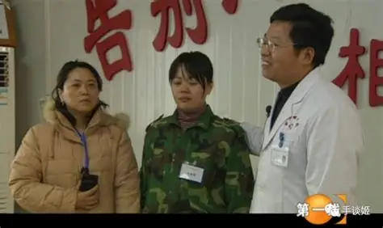

“Parents”
signature,
“children’s”
shock.
The thought of becoming a parent
without taking a test is terrifying.
—Kotaro Isaka
1.Parents saved by Yang Yongxin
Three years ago, 14-year-old Xiao Tang was in
the first year of junior high school. His parents
divorced when he was in fifth grade, and Xiao
Tang had lived with his father, Tang Xueli, for the
past two years. One day, Tang Xueli came home
from get off work and opened the door to a "very
piercing sound." He went into the child's room,
where Xiao Tang was watching a livestream (or
perhaps a cartoon; during the interview, Tang
Xueli couldn't quite tell the difference). He felt
as if he "heard a burst of mournful music," and
he accused Xiao Tang, "You're hearing the same
thing as a dead person."

Tang Xueli admitted, "The child's current situation
is definitely closely related to the divorce and his
leaving his mother." One day, when he came home
from get off work, he found Xiao Tang crying in
his room. Xiao Tang told his father, "At school, my
classmates look down on me because I don't have a
mother." Tang Xueli told me that a significant number
of children at the Linyi Internet Addiction Treatment
Center are troubled by their parents' divorces and
remarriages.
Tang Xueli said Xiao Tang then "became a
demon." Xiao Tang began smashing things like
a table, then a bench, and finally the TV in the
living room. Unable to stop him, Tang Xueli
retreated to his room. He later tried to reconcile
with the child, but to no avail. That same night,
Tang Xueli was awakened by a loud noise. Xiao
Tang smashed down his door with a bench.

Tang Xueli wouldn't tell me the reason for the
divorce, feeling it was "too complicated to explain."
He admitted he couldn't control his son. Tang Xueli
described Xiao Tang as playing computer games until
midnight every day. He urged his son to go to bed,
but "as soon as he heard that, he got angry and started
smashing things," eventually smashing the TV.
Tang Xueli ultimately decided to send his son to the
Linyi Internet Addiction Treatment Center. A native
of Linyi, he had a relative who worked there and "had
known the center since its inception." Knowing Xiao
Tang wouldn't want to go, Tang Xueli lied to him,
saying he was going to buy a computer. With the help
of the center staff, his son "never left after entering."
I give you a brand new Auschwitz,
I give you a hell of exquisite craftsmanship,
I give you a plump, juicy body.
I'll lift off your skull and steal your tender pink brain.
I'll dig out your intestines, a vibrant red, a lovely sight.
Green flies glitter and shine brightly on your rotting body.
I'll roast a fresh piece of brain for you.
I'll roast a fresh heart for you.
I'll put makeup on you,
covering the tiny specks of corpse stain.
I'll help you eliminate what you won't need in the future.
You'll take flight on the runway.
Speak, child. Mom and Dad love you.
Speak, child. We are raising you to be a successful person.
Speak, child. You love us.
Speak, child. You love the world
I give you a hell of exquisite craftsmanship,
I give you a plump, juicy body.
I'll lift off your skull and steal your tender pink brain.
I'll dig out your intestines, a vibrant red, a lovely sight.
Green flies glitter and shine brightly on your rotting body.
I'll roast a fresh piece of brain for you.
I'll roast a fresh heart for you.
I'll put makeup on you,
covering the tiny specks of corpse stain.
I'll help you eliminate what you won't need in the future.
You'll take flight on the runway.
Speak, child. Mom and Dad love you.
Speak, child. We are raising you to be a successful person.
Speak, child. You love us.
Speak, child. You love the world
2 .Why do parents trust experts
Parents often place restrictions on their children's
hobbies, such as basketball and figurine collecting,
based on an overemphasis on academic performance,
traditional educational values, strict time management
requirements, preconceived notions of the future, or
an overprotective mentality. However, the underlying
reason behind these restrictions may be a parent's
desire to maintain authority within the family, using
harsh parenting methods to demonstrate control and
ensure absolute obedience. In short, parents seek a
psychological sense of dominance, and when direct
discipline seems too harsh, they seek to maintain their
image as "good parents" with a clear conscience.
3.15 years later, I still haven't escaped Yang Yongxin's hell on earth
In September 2016, 38-year-old Li Mei was tied to a chair in a residential building in
Zhaodong City, Heilongjiang Province.
Duct tape and rope were wrapped around her, binding her immobile. However, the person
holding Li Mei captive
wasn't a thug kidnapper, but her 16-year-old daughter, Chen Xinran.
Li Mei tearfully begged her daughter to let her go, but Chen Xinran refused to listen.
She sat across from Li Mei, refusing her a single grain of rice or a single drop of water.
She also repeatedly
assaulted her with electric batons and other sharp objects.

Nine days later, Li Mei passed away. The autopsy revealed wounds all over her body, and her stomach
was empty.
At the time, Chen Xinran, a minor, was sentenced to only seven years in prison.
This case of a young woman murdering her mother shocked the internet and exposed the internet addiction treatment school hidden behind Chen Xinran Sixteen-year-old Chen Xinran was twice tricked into attending an internet addiction treatment school by her parents because of her homosexuality.
In Chen Xinran's words, she was paying back the abuse she had sufered in the past. The same despair she felt at school refected the severity of her treatment of her mother.
At the time, Chen Xinran, a minor, was sentenced to only seven years in prison.
This case of a young woman murdering her mother shocked the internet and exposed the internet addiction treatment school hidden behind Chen Xinran Sixteen-year-old Chen Xinran was twice tricked into attending an internet addiction treatment school by her parents because of her homosexuality.
In Chen Xinran's words, she was paying back the abuse she had sufered in the past. The same despair she felt at school refected the severity of her treatment of her mother.

Although Chen Xinran's case is extreme, her story refects the lives of thousands of children trapped
in internet
addiction treatment schools.
After escaping this "hell on earth," they buried their anger and hatred, refusing to trust anyone. They endured years of nightmares, living in fear and depression.
As one victim put it, you may never leave the internet addiction treatment school because your heart has long since died there.
After escaping this "hell on earth," they buried their anger and hatred, refusing to trust anyone. They endured years of nightmares, living in fear and depression.
As one victim put it, you may never leave the internet addiction treatment school because your heart has long since died there.
Yang Yongxin pioneered a comprehensive treatment program for internet addiction, the most famous of
which is
the mysterious treatment performed in "Treatment Room 13."
In Yang Yongxin's words, thousands of children have experienced immediate relief in this treatment room.
This mysterious treatment room is airtight, containing only a bed, a chair, and a piece of equipment that lacks a manufacturing license.
One end of the device was connected to a switch and knob for adjusting the current, and the other end was connected to the "problem child's" forehead.
When the switch was turned on, the current instantly struck the child's head like "a million needles," causing the child to convulse violently and uncontrollably.
In Yang Yongxin's words, thousands of children have experienced immediate relief in this treatment room.
This mysterious treatment room is airtight, containing only a bed, a chair, and a piece of equipment that lacks a manufacturing license.
One end of the device was connected to a switch and knob for adjusting the current, and the other end was connected to the "problem child's" forehead.
When the switch was turned on, the current instantly struck the child's head like "a million needles," causing the child to convulse violently and uncontrollably.